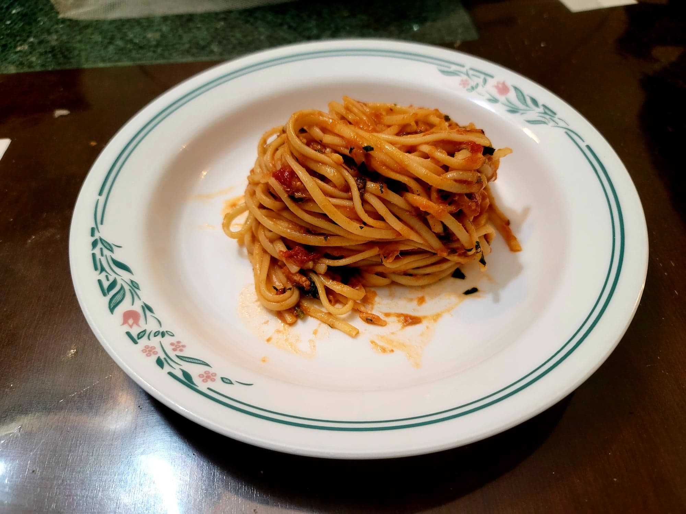

Pasta al Tonno

Ingredients:
- 1 lb any long Dried pasta, i.e. Spaghetti, Linguine
- 3 tbsp Olive oil
- 3 cloves Garlic, smashed
- 1/4 tsp Red pepper flakes
- 28 oz can Peeled tomatoes, coarsely crushed by hand
- Salt, to taste
- 3 5oz cans Tuna, drained and lightly flaked
- 1 cup Parsley, finely chopped
Instructions:
- Bring a pot of salted water to a boil over high heat while preparing the sauce.
- In a large pan, heat the olive oil over medium heat. Add in the garlic and let cook until golden on both sides. Then remove the garlic with a fork or a slotted spoon.
- Add in the pepper flakes and let toast until fragrant, about 30-60 seconds. Then add in the tomatoes and season lightly with salt. Let cook over medium heat until thickened and emulsified with the oil, stirring occasionally, about 10 minutes.
- While the sauce reduces, place the pasta into the boiling salted water. Cook until about 2 minutes before desired doneness.
- Add the tuna into the sauce and gently mix in until just incorporated. Then turn the heat to high and add in the pasta and about 1/4 cup pasta water into the sauce. Toss the pasta in the sauce until the pasta is well incorporated and is cooked to desired doneness, adding in more pasta water as needed to adjust the consistency of the sauce.
- Remove from the heat and toss in the parsley along with more salt as needed. Serve hot.